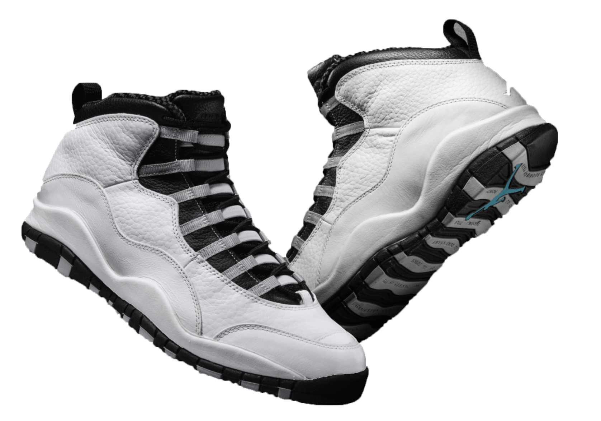
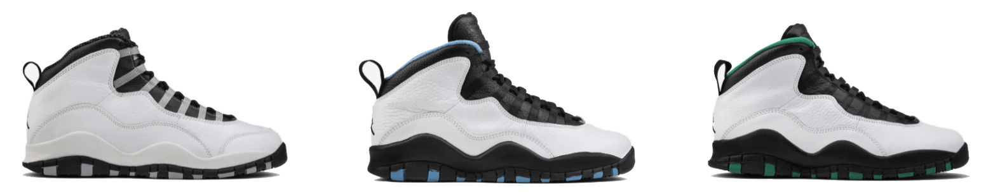
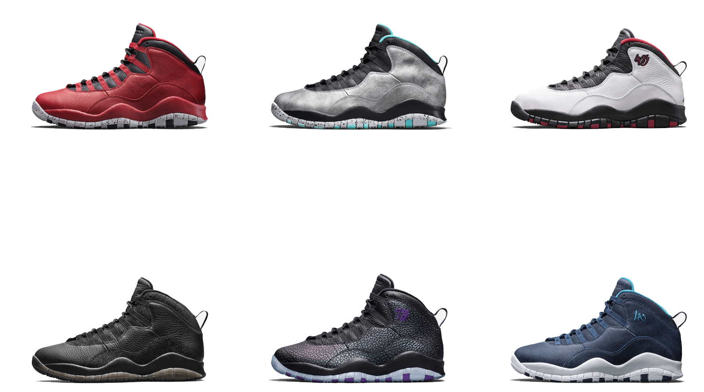
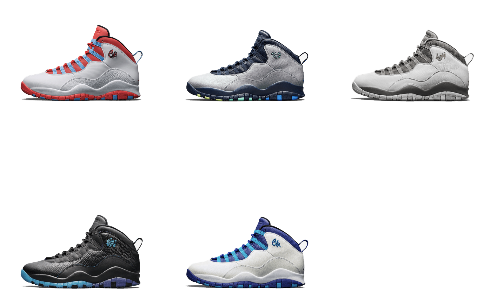

Designed while Jordan was away from the game, the Air Jordan X featured clean lines and lateral stripes on the soles that paid tribute to each of his 10 early career milestones. Little did anyone know, MJ was eager to take care of some unfinished business. He would return during the 1994–95 season in time to play in the AJ X, with his temporary number — 45 — emblazoned on its side.
The Air Jordan X wasn’t solely built as a tribute to its eponymous legend. Just like the other nine shoes in the series, its superior performance translated to the court, and MJ proved it with his 55-point onslaught in his first game back in New York City on March 18th in 1995, the infamous “double nickel” game.



